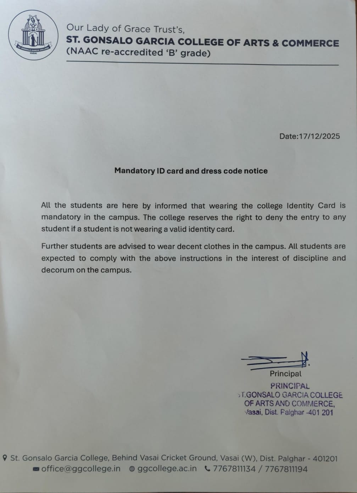

About Us

St. Gonsalo Garcia College of Arts and Commerce
St. Gonsalo Garcia College, situated in the historic Vasai region of Maharashtra, was established in 1984 with a vision to provide quality higher education to the youth of this region. Founded under the auspices of the Our Lady of Grace Trust, the college has grown into a premier institution of higher learning affiliated to the University of Mumbai.
The foundation stone of the college was blessed and laid by His Holiness Pope John Paul II on 9th February 1986 during his historic visit to Vasai — a moment of great pride and spiritual significance for the entire community. The college shifted to its present sprawling campus behind Vasai Cricket Ground in 1996, equipped with modern infrastructure and facilities conducive to holistic education.
Over the decades, the college has consistently worked towards the integrated development of youth, fostering academic excellence, moral integrity, and social responsibility. NAAC Re-accredited with 'B' Grade, the college continues to be a beacon of hope and opportunity for students from Vasai and surrounding regions.
Mission & Vision
Our Vision
To provide the rural youth higher education aimed at academic excellence coupled with overall character formation through moral ethical and spiritual values inculcating the spirit of research and discovery, to orient in skills, to ensure employment and self-sufficiency through various courses to enhance essential human resource development for the overall improvement of life which lead to nation building.
Our Mission
- Offer Higher education to the needy without distinction of caste and creed
- Imbibe students with culture of decency and dignity
- Enable training and access to relevant fields of interest
- Help students access job opportunities
- Develop awareness through syllabus and extra-curricular activities
- Motivate staff to develop creative potential
- Encourage staff and students to coordinate skills
Our Inception
The Beginning of a Legacy
The story of St. Gonsalo Garcia College began in 1984 when the Our Lady of Grace Trust envisioned a centre of higher education for the Vasai region — an area that was then underserved in terms of college-level education. The college was named after St. Gonsalo Garcia, a Franciscan missionary and the first Indian saint to be canonized, who was born in the nearby village of Baltar in Vasai.
A landmark moment in the college's early history came on 9th February 1986, when His Holiness Pope John Paul II, during his apostolic visit to India, laid the foundation stone of the college. This papal blessing gave the institution a unique spiritual heritage and a global identity.
Initially operating from temporary premises, the college moved to its permanent campus in 1996 — a sprawling plot behind the Vasai Cricket Ground. This shift marked a new chapter, allowing the college to expand its infrastructure, introduce new programmes, and serve a growing student population from Vasai, Nalasopara, Virar, and surrounding areas.

Affiliations & Accreditations
University of Mumbai
The college is permanently affiliated to the University of Mumbai, one of India's oldest and most prestigious universities, and follows its curriculum and examination guidelines.
NAAC Accreditation
The college is NAAC Re-accredited with 'B' Grade, reflecting its commitment to quality education, governance, infrastructure, and student development.
UGC Recognition
The college is recognized by the University Grants Commission (UGC) under Section 2(f) and 12(B), enabling it to receive central government grants and benefits.
Chairman's Message
We proudly bear the name of St. Gonsalo Garcia, the First Catholic Martyr and Saint of India and the Patron of our Diocese. Born in Vasai in 1556, St. Gonsalo's life was a testament to unwavering faith and service, culminating in his martyrdom in Nagasaki, Japan, in 1597.
At St. Gonsalo Garcia College, which was established in 1984, stands as a beacon of academic excellence and holistic development in the vibrant region of Vasai. We offer a diverse array of undergraduate and postgraduate programs in the discipline of Arts and Commerce.
As we navigate an ever-evolving world, let us draw inspiration from the Patron Saint and work collectively towards a future rooted in knowledge, empathy, and resilience.
Most Rev. Thomas D'Souza
Bishop, Diocese of Vasai & Chairman, St. Gonsalo Garcia College
Most Rev. Thomas D'Souza
Bishop, Diocese of Vasai
Chairman, St. Gonsalo Garcia College
Management
Our Lady of Grace Trust — Managing Committee
Policies
Grievance Redressal Policy
The college has a robust grievance redressal mechanism to address complaints and concerns of students, faculty, and staff in a fair and timely manner.
Anti-Ragging Policy
Strict anti-ragging measures are in place as per UGC and Maharashtra government regulations. Any form of ragging is strictly prohibited and punishable.
Equal Opportunity Policy
The college is committed to providing equal opportunities to all students and staff regardless of caste, creed, gender, or disability.
Sexual Harassment Prevention Policy
The Internal Complaints Committee (ICC) addresses matters related to sexual harassment as per the POSH Act, 2013.
Green Campus Policy
The college is committed to environmental sustainability with initiatives for waste management, water conservation, tree plantation, and energy efficiency.
RTI Policy
The college complies with the Right to Information Act, 2005, and provides information to applicants through the designated Public Information Officer.
Principal's Message
Dr. Somnath Vibhute
MA, PhD, SET, NET
Principal
"It is a matter of great pride and privilege to lead St. Gonsalo Garcia College of Arts and Commerce — an institution with a rich legacy of academic excellence and moral values. Our college is committed to nurturing young minds and empowering them to become responsible citizens and future leaders.
With a dedicated team of qualified faculty, state-of-the-art infrastructure, and a student-centric approach, we strive to create an environment where every student can discover their potential, pursue their passions, and achieve their goals. The college offers a wide range of programmes across Arts, Commerce, and Science streams, along with value-added courses that enhance employability.
I invite you to be part of the GG College family and embark on a transformative journey of learning, growth, and success. Together, let us shine — Swaprakashen Dippyatham."
Dr. Somnath Vibhute
Principal, St. Gonsalo Garcia College of Arts and Commerce
Vice Principal's Message
Dr. Anil Kumar Singh
MA, PhD, NET
Vice Principal
"At St. Gonsalo Garcia College, we believe in the holistic development of every student. Our focus extends beyond academics to include co-curricular and extracurricular activities that build character, foster creativity, and develop leadership skills.
We are committed to maintaining a nurturing and inclusive environment where students feel supported, motivated, and empowered to excel. Our faculty work tirelessly to mentor students, guide them in their academic journey, and prepare them for the challenges of the professional world.
I encourage all students to make the most of the opportunities available at GG College and strive for excellence in every endeavour."
Dr. Anil Kumar Singh
Vice Principal, St. Gonsalo Garcia College of Arts and Commerce
Former Principals
Former Faculty
Distinguished educators who have served the institution
Prof. Shobha Desai
Department of Economics
Service: 1986 — 2018
Prof. Ramesh Patil
Department of Commerce
Service: 1984 — 2016
Prof. Meena Joshi
Department of English
Service: 1990 — 2020
Prof. Sunil More
Department of Marathi
Service: 1992 — 2019
Prof. Anita Singh
Department of Hindi
Service: 1995 — 2021
Prof. Prakash Sawant
Department of History
Service: 1988 — 2017
Code of Conduct
St. Gonsalo Garcia College expects all members of its community — students, faculty, and staff — to uphold the highest standards of conduct and behaviour. The following code of conduct applies to all stakeholders:
For Students
- Attend classes regularly and punctually
- Wear college ID card and follow the prescribed dress code
- Respect teachers, staff, and fellow students
- Maintain discipline and decorum on campus
- Refrain from ragging, bullying, or any form of harassment
- Keep the campus clean and green
- Use college property with care and responsibility
- Follow examination rules and academic integrity
For Faculty & Staff
- Uphold the institution's values and mission
- Treat all students with fairness and respect
- Maintain academic standards and integrity
- Engage in continuous professional development
- Avoid conflicts of interest and maintain confidentiality
- Contribute to a positive and inclusive work environment
- Adhere to all college policies and regulations
Perspective Plan
Strategic roadmap for the future development of the college
Academic Enhancement
Introduce new undergraduate and postgraduate programmes in emerging fields such as Data Science, Artificial Intelligence, and Environmental Studies. Strengthen the Ph.D. programme in Rural Development.
Research & Innovation
Establish a dedicated research centre to promote interdisciplinary research. Encourage faculty and students to publish in peer-reviewed journals and apply for major research grants.
Infrastructure Development
Expand campus infrastructure including new classrooms, laboratories, a smart auditorium, and upgraded sports facilities. Enhance digital infrastructure for blended learning.
Community Engagement
Strengthen extension activities through NSS, NCC, and DLLE. Launch skill development programmes for the local community and rural youth.
International Collaborations
Forge partnerships with international universities for student exchange, joint research, and faculty development programmes to globalize the learning experience.
Sustainability Initiatives
Work towards a carbon-neutral campus through renewable energy adoption, waste management, rainwater harvesting, and extensive tree plantation drives.